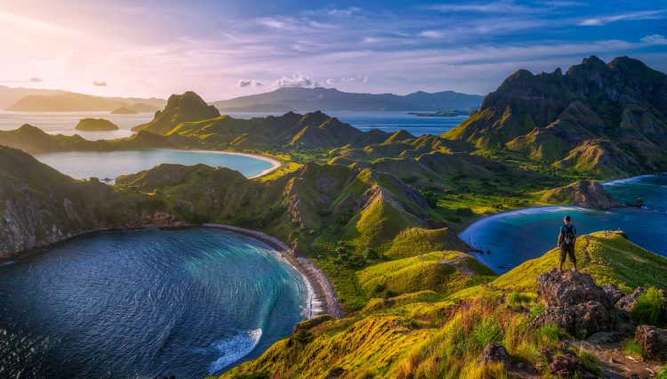

Di Posting Oleh Feby Pranata

Pemandangan Indah
Indonesia adalah salah satu negara di dunia yang dikaruniai begitu banyak pemandangan indah. Dari barat di Aceh hingga Papua di bagian timur, ada ribuan banyaknya suguhan keindahan alam khas Indonesia. Gunung-gunung yang tinggi menjulang, pantai yang membentang, dan budaya yang begitu kaya, telah menempatkan Indonesia sebagai sebuah negara yang demikian istimewa untuk menjadi tujuan wisata.
Baca Selengkapnya →
Di Posting Oleh Feby Pranata

Pulau Padar
Gambar Pemandangan alam terindah di Indonesia yang pertama adalah pulau padar, pulau padar merupakan satu dari tiga pulau terbesar yang berada wilayah di taman nasional komodo, nusa tenggara timur.
Baca Selengkapnya →